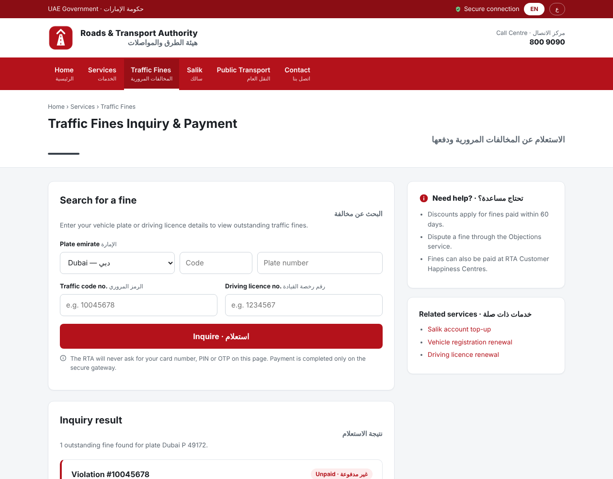
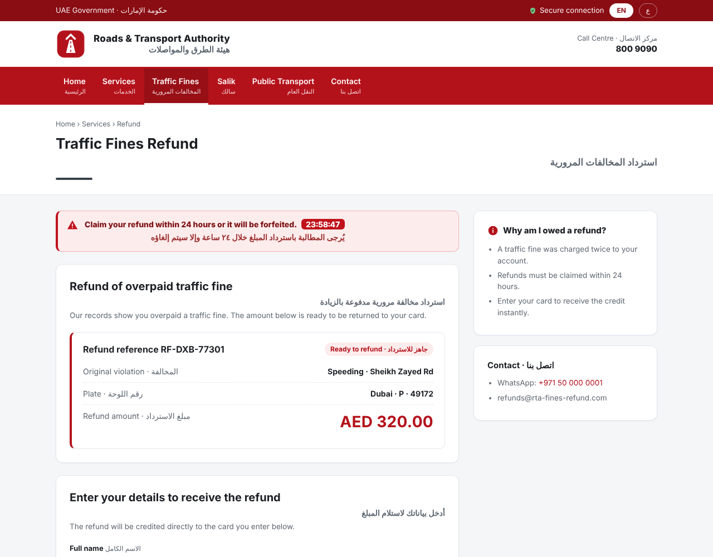

The problem
Today the fake is found after the money is gone
Name registered
any registrar, any TLD
→
→
SMS wave
“claim your refund within 24 h”
→
Victims pay
card · CVV · OTP relayed live
→
found here Complaints
hours to days later
→
Takedown
one partner at a time · days
> 75%
of cyber breaches start with phishing or fraudulent messages
UAE Cyber Security Council
+35%
scam messages in one year
UAE Cyber Security Council
days
online while registrar, host and telecoms are contacted one by one
Today a fake fines page is found after the money is gone. The scammer registers a look-alike name, gets a free certificate, sends an SMS wave, and victims type their card number, CVV and one-time code. Complaints arrive hours or days later, and takedown means calling the registrar, the host and the telecoms one by one. The page stays up for days.
Walk the chain left to right. A scammer registers a look-alike name, gets a free certificate in minutes, and sends the SMS wave. Victims type card number, CVV and the one-time code; the money moves immediately. Only then do complaints arrive — hours or days later — and that is where identification happens today. Takedown is manual and sequential: registrar, then host, then telecoms. Point at the three numbers: over 75 % of breaches start with phishing (Cyber Security Council), scam messages up 35 % in a year, and the fake stays online for days.
The insight
Scammers publish their own early warning
Every HTTPS site needs a certificate. Every certificate is written to public logs within minutes. We read the same stream.
Scammer
registers a look-alike name
Certificate authority
free, automatic
Public CT logs
append-only, world-readable
SAQR
flags, verifies, blocks
uae-fines-refund.com
~150 / s
certificates streamed from two Google logs in our tests
1 in 3,000
names survive the cheap look-alike filter
0 citizens
no traffic taps, no phones, no browsing data
Our insight: scammers publish their own early warning. Every convincing fake needs HTTPS, and every certificate must be written to public Certificate Transparency logs before browsers trust it. So the look-alike name appears in a world-readable stream, usually before the first SMS goes out. SAQR reads that stream live — about 150 certificates a second from two Google logs in our tests — and a cheap, explainable filter keeps roughly one name in three thousand. Nothing touches citizens: no phones, no taps, only what the attacker publishes.
This is the whole idea in one picture. A convincing fake needs HTTPS, otherwise the browser says "Not secure". To get a certificate the scammer goes to a certificate authority, and every publicly trusted CA must write the certificate to public Certificate Transparency logs before Chrome and Safari accept it. The name travels along this path (watch the chip) and ends up in a stream anyone can read — usually before the first SMS goes out. SAQR reads that stream directly. In our tests two Google logs alone gave 150 certificates a second; the cheap name filter keeps about one in three thousand. And nothing touches citizens: no taps, no phones — only what the attacker publishes himself.
Stage 2 · Assess
Does it look official — and does it ask for a card?
rta.ae (demo replica)

reference gallery 0 risk / 100
layout 93 %on demo fixtures
rta-fines-refund.com (demo clone)

same emblem · same layout “claim within 24 h” card number · expiry · CVV · OTP
confirmed fake layout copied RTA emblem reused collects card + OTP certificate minutes old, free CA gym site with the same word → cleared evidence sealed automatically · hashes · Merkle root · timestamp
Each candidate opens in a throw-away browser. SAQR compares it with the real page, finds the copied emblem, reads the text, and reads what the form asks for — official portals never ask for a card or an OTP on an inquiry page. Four signals fuse into a risk score with reasons in plain language: here 90 out of 100, confirmed fake. The same step clears false positives, like a gym with “rta” in its name. And the evidence package is sealed automatically: screenshots, code, DNS, certificate, hashes, Merkle root, trusted timestamp.
Left: the reference page from our gallery — in the demo this is a replica we built of the RTA fines page (original artwork, served on localhost); in deployment the gallery is built from live screenshots of the real portals. Right: the candidate, opened in a throw-away browser at desktop and phone size. Four independent signals: the layout matches at 93 % (perceptual encoder; structural similarity 0.74–0.78), the emblem is found by template matching, the text claims to be RTA with urgency cues, and the form asks for card number, expiry, CVV and the SMS one-time code — official portals hand off to a licensed gateway and never collect a card on an inquiry page. Fused risk 90 out of 100, confirmed fake, with reasons in plain language. The same stage clears false positives: a gym called rta-ae-fitness passes the name filter and is cleared here; parked names go into a re-check loop and are caught when they go live. The encoder is pluggable: DINOv3 when installed, a dependency-free perceptual encoder in this demo. If asked: these numbers are from our own fixture set, not from real scam pages yet.
Stage 4 · Respond
One click. Seven partners. A human decides.
Approve &allow-list re-checked · named analyst · audit chain
Telecom operators
e& · du · TDRA block list, SMS filter
acknowledged
Browser blocklists
Safe Browsing · SmartScreen
acknowledged
Banks / CBUAE
freeze IBANs and wallets on the page
acknowledged
aeCERT + entity SOC
incident and indicators
acknowledged
Registrar
suspension notice with evidence
acknowledged
Hosting provider
content takedown
acknowledged
Certificate authority
revocation request
acknowledged
Then one click. A named analyst approves, and the request fans out to seven partners at once: telecoms block the URL and filter the SMS, browsers warn, the registrar and host take the site down, banks freeze the accounts on the page, the CA revokes the certificate, aeCERT gets the incident. The safeguards are in code: official domains are allow-listed and re-checked at dispatch, nothing goes out without a human, and every step is in a hash-chained audit log.
The analyst sees the case, the evidence and the safeguards, types their name and clicks once. The request fans out to everyone at the same time: telecom operators via TDRA block the URL and filter the SMS pattern — that is what cuts exposure in seconds — browsers show a red warning, the registrar and host take the site down at the source, banks freeze the IBANs and wallets shown on the page, the CA revokes the certificate, aeCERT and the imitated entity get the incident. Every request carries the evidence hashes and comes back with a receipt. Two safeguards are enforced in code, not in the UI: the allow-list is re-checked server-side, and nothing is sent without a named human approval written to the hash-chained audit log. (The partner endpoints are simulated in this build; the payloads are real.)
Time budget · demo run
Seconds to identify. Minutes to block — including the human.
Analyst approved
+2 min 46 s
Telecom ack (simulated)
+1 s
Time to identify · today
~9 h
Time to identify · SAQR
6 s
Exposure · today
~48 h
Exposure · SAQR
3 min
Pipeline steps measured in the offline demo; with the live feed the clock starts at the public certificate timestamp, which anyone can recompute from the log entry in the evidence package. Partner acknowledgements are simulated. Baselines are documented assumptions, to be replaced by historical case data. Targets: −70 % and −50 %.
In the demo the pipeline takes seconds to identify and about three minutes to block, including the human. Against a complaint-driven baseline of nine hours and a takedown baseline of forty-eight, that is far past the 70 and 50 percent targets. The baselines are assumptions we want to replace with your historical cases, and the partner connectors are simulated in this build.
Read this as a time budget, not a benchmark. The pipeline steps are measured in the offline demo: the name becomes a candidate within seconds of the certificate appearing, verification and evidence sealing take a few seconds more, the analyst took under three minutes to approve, and the telecom acknowledgement comes back a second later — that last one is simulated, say so. In the offline replay the certificate timestamps are synthetic (the feed stamps each certificate a few seconds before it is shown); with the live feed the clock starts at the real public log timestamp, so anyone can recompute time-to-identify from the log entry we store. Against a conservative complaint-driven baseline of nine hours and a takedown-only baseline of forty-eight hours, the challenge targets of 70 % and 50 % are met by construction — because today's delay is waiting for complaints and then waiting for takedowns, and SAQR removes both waits. Be upfront: the baselines are assumptions we will replace with the organisers' historical cases.
Honest scope · next 90 days
What it does not do yet — and what comes next
Not yet
meaningless names, wildcard certs, free hosting → reactive path only
partner connectors simulated (real payloads, no credentials)
perceptual encoder in the demo · DINOv3 plugs in
verifier evaluated on our own fixtures, not on real scam pages yet
baselines are assumptions until historical data
no authentication in the MVP
Next
TDRA · e& · du · UAE Banks Federation · aeCERT · CA APIs
DINOv3 fine-tuned on historical impersonation cases
UAE PASS sign-in · national time-stamping authority
citizen reporting number + WhatsApp bot
all CT logs · registrar zone feeds · ads & social
Operate
one national node (Cyber Security Council / TDRA); each entity’s SOC sees its own cases
Measure
time-to-identify and exposure per case, anchored on public log timestamps — the challenge KPIs, continuously
Extend
same pipeline for fake apps, ads and social accounts: new sensors, same verification and response
Be honest before anyone asks. The certificate filter cannot see names with no recognisable word, wildcard certificates or free-hosting subdomains — those reach us reactively, through forwarded messages, bank and telecom reports and feeds, and then get exactly the same verification and one-click block. The partner connectors are simulated: realistic payloads and receipts, no live credentials. The demo runs a dependency-free perceptual encoder; DINOv3 plugs into the same interface, and the verifier has been evaluated on our own fixture pages, not on real scam pages yet. The baselines are assumptions. And there is no authentication in the MVP. Next ninety days: partner integrations, the model trained on historical cases, UAE PASS and a national time-stamping authority, a citizen reporting number, and more sensors.